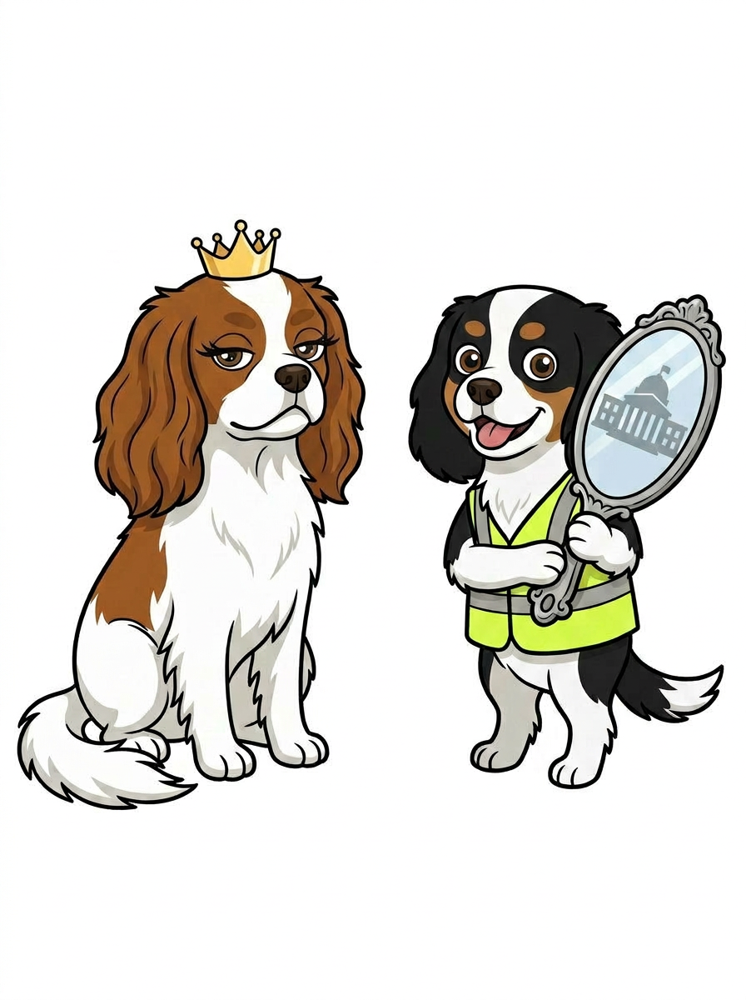

Copeland J.D.
Attorney · Author · Scholar · Advocate
Laugh → Listen → Learn → Act™
Katie Copeland is a disability rights attorney and legal scholar whose work exposes the invisible barriers that prevent people with disabilities from receiving equal justice in America's courts. Her writing, frameworks, and advocacy are changing how the legal system understands its obligations under the ADA.

Recognized by the Profession
ABA Commission on Disability Rights
April 7, 2026
The ABA Commission on Disability Rights amplified Katie's article "Access Is Not Advantage" — recognizing her argument that disability accommodations in court are legal requirements, not judicial favors.
Changing How Courts Understand Access
From published scholarship to legislative proposals, Katie's work provides the legal profession with practical tools for systemic change.
The Invisible Barrier
A manifesto exposing how America's state courts systematically fail to comply with ADA Title II — and a framework for holding them accountable.
Learn More →Access Is Not Advantage
Published in the American Bar Association journal, March 2026. A foundational argument that disability accommodations are legal requirements, not judicial favors.
Read More →The Copeland Questions™
Eight threshold questions that reveal exactly where a court's ADA Title II obligations were violated — a practical tool for attorneys, advocates, and litigants.
Discover the Framework →“She was not disorganized. She was unaccommodated. The record cannot tell the difference.” From The Invisible Barrier
Three Pillars
The principles that anchor every argument, framework, and reform proposal.
Structural Integrity
"Access is a system requirement, not a courtesy."
Courts must build compliance into their infrastructure — not treat it as an afterthought when someone asks.
Meaningful Participation
"Presence alone is not enough."
Being in the courtroom is not the same as being heard. True access means the ability to participate fully and effectively.
Cognitive Prosthetics
"Support tools restore — not distort — participation."
Accommodations are not advantages. They are tools that restore the ability to participate on equal terms with everyone else.
Both Rigorous and Human
Katie's work lives at the intersection of legal scholarship and lived experience. She brings the precision of a trained litigator and the insight of someone who has navigated these systems personally. Her approach is dialectical — holding complexity rather than collapsing it.
She doesn't ask courts to be sympathetic. She asks them to be compliant. Her "both/and" framework recognizes that courts can protect judicial discretion and meet their legal obligations under the ADA. That judges can maintain authority and provide meaningful access. That the law can be rigorous and humane.
This is systems-level thinking applied to civil rights — identifying patterns of non-compliance, building frameworks for accountability, and offering practical tools that work within existing legal structures.
Ruby & Moon's Royal Decrees
Making the law accessible — one decree at a time.

Ruby is a Blenheim Cavalier King Charles Spaniel who issues Royal Decrees about disability rights from her velvet cushion. Moon is a tricolor Cavalier who holds the clipboard. Together, they make the law accessible — one decree at a time.
Three Dimensions of the Work
Katie's mission spans personal thought leadership, legal practice, and systemic advocacy.
Scholar & Author
Writing, speaking, and thought leadership that reframes how the legal profession understands disability access in courts.
katiecopeland.com
Legal Practice
Direct legal services and consultation applying The Copeland Questions™ framework to real cases and court systems.
copelandlawtexas.com
Systems Justice
Public education, court access reform, and advocacy through the Systems Justice Institute.
systemsjusticeinstitute.org